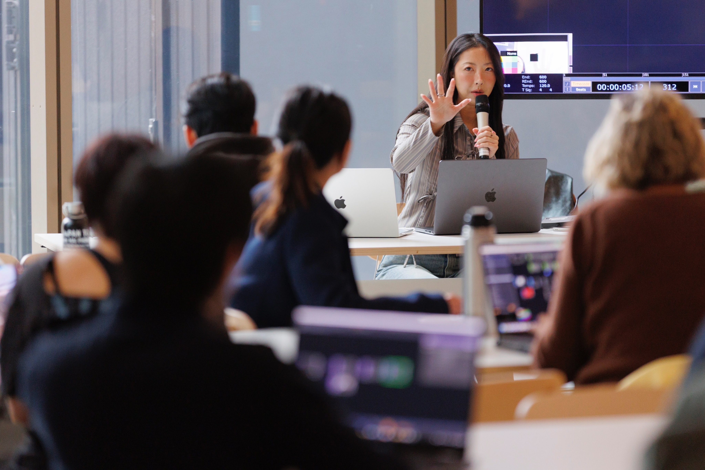

Can a workshop be designed for beginners?
The programme can be scoped around participants’ prior experience. An introduction to real-time visuals differs from a sensor-prototyping session, so learning goals are agreed first.
Commissioned work
Artist-led sessions connecting real-time media with tactile participation. Minnie Park works with galleries, cultural organisations and creative teams to develop workshops around TouchDesigner, conductive touch, sensors and audio-visual systems.

Park led Touching Resonance at Seventh Gallery, Melbourne, on 15 April 2026 as an individual artist workshop. Artists, Machines and the Space Between was presented with TouchCollective at Science Gallery Melbourne in October 2025. As a TouchCollective co-founder, she also contributes to peer learning and creative technology community practice. These activities have distinct organisers and credits.
See workshop records ↗Share the organisation, participant number and experience, learning goals, preferred dates and duration, online or in-person format, available computers and equipment, and budget range.
Following the initial brief, scope, deliverables, technical responsibilities, schedule and usage are agreed before production begins.
The programme can be scoped around participants’ prior experience. An introduction to real-time visuals differs from a sensor-prototyping session, so learning goals are agreed first.
Online teaching can be discussed. Software versions, computer requirements and any physical interface kits should be checked before confirming the format.
No. Park’s individual artist workshops and TouchCollective programmes are separate. The proposal and publicity should identify the relevant organiser and collaborators.